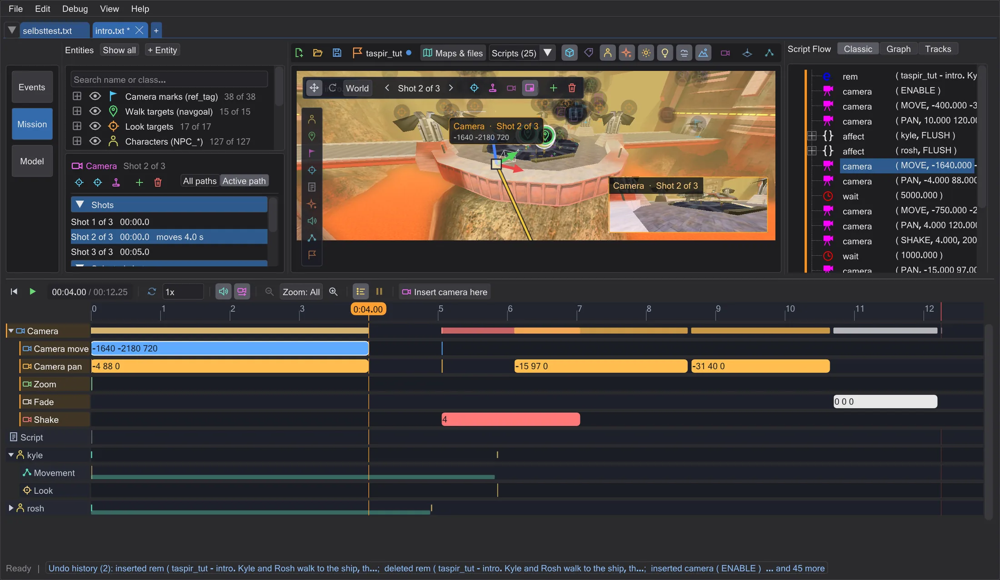
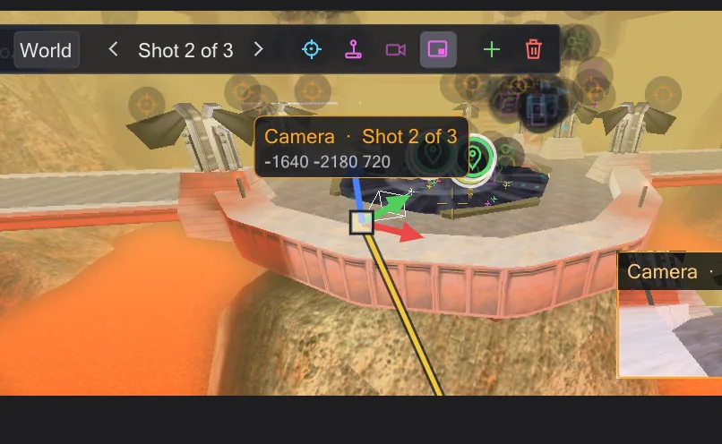
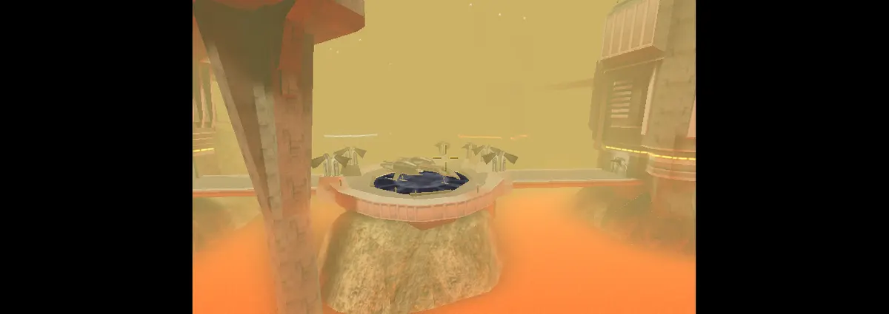

Camera
Every camera MOVE and PAN of the script is a shot you can see, grab and fly - the script is rewritten as you drag.

Shots#
In ICARUS a shot is camera ( MOVE, <position>, <time> ) followed by camera ( PAN, <angles>, <time> ). BehavEd-Remake reads them in order and draws each as a camera symbol on the map. Click the camera symbol to select the camera; the list Shots on the left shows every shot with its time and travel time (moves 6.0 s). Click a line to jump there.
- Previous shot / Next shot step through the shots; Fly to shot puts your view exactly where the selected shot stands and looks.
- New camera shot here adds a MOVE and a PAN at your current view, after the selected shot. Set to view moves the selected shot to where you are looking.
- Delete shot removes it. Under Selected shot you type exact values: Position, Direction and Travel time (0 = a cut).
Moving and turning a shot#
The toolbar above the view switches the gizmo: Move shows three arrows and a box in the middle - drag an arrow to move along one axis, the box to move in the view plane. Rotate shows three rings for pitch, yaw and roll. World / Local decides whether the arrows follow the map or the camera. Letting go writes the new values into the script - one undo step.



If the timeline stands between two keys when you grab the gizmo, a new key is created at that moment instead of changing the start - like the auto-key of animation programs. While piloting, Enter sets such a key too (Fly a shot yourself (Pilot)).
Camera paths#
The selected camera draws its path: already flown parts in yellow, the rest in grey. With many shots that gets crowded - Active path shows only the move into the current shot and on to the next, All paths shows every move. Both buttons sit in the camera panel.
Fly a shot yourself (Pilot)#
Pilot puts you into the shot: hold the right mouse button to look around, W A S D to move, Q E for down and up. Apply writes the view into the script, Esc cancels. While piloting, move the timeline and press Enter (Set key) to set key after key along the way.
Preview and looking through#
Camera preview (in the bar of the selected camera, top left in the view) shows a small picture of what the camera sees, bottom right in the view; it follows the gizmo while you drag. Click the picture to look through the camera full size; while you look through it, playing the timeline shows the cutscene as the game will. Through camera in the same bar does this directly.

Animationref_tag or look at one. Then the panel says so, and moving the shot moves that ref_tag in the map - the script itself only names it.